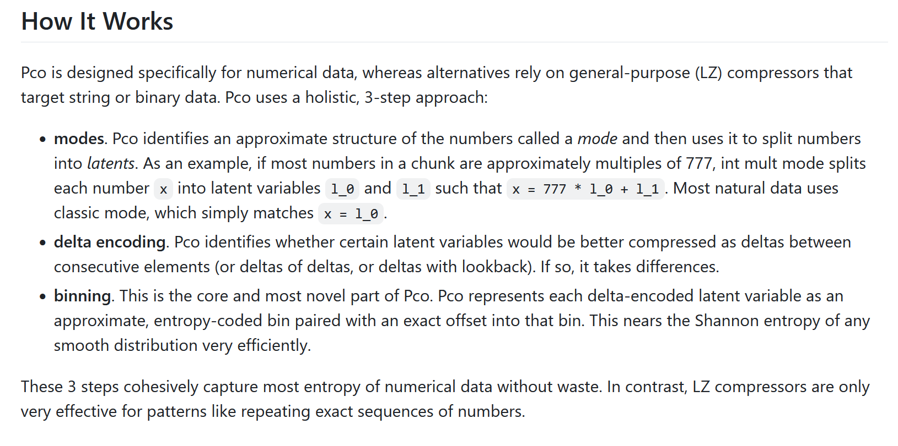

In my previous post,
I showed how ClickHouse outcompressed our tuned Parquet setup on our IoT dataset.
It did this by having better compression codecs than Parquet, and the star
of the show was the
DoubleDelta
codec. In this post, I will show the key ideas used by
pcodec, a more modern compression codec
added just days ago to ClickHouse,
to significantly beat DoubleDelta on both size and decompression speed,
at the cost of compression speed.
A quick recap of the previous post. We ingest over a trillion GPS pings from vehicles per year, and sort them in a columnar format such that consecutive pings from the same vehicle are next to each other. The tuned Parquet schema looks like this:
int64 s2_cell_id INTEGER(64, false); -- PLAIN
binary session_id STRING; -- PLAIN
int32 latitude_e6 INTEGER(32, true); -- DELTA_BINARY_PACKED
int32 longitude_e6 INTEGER(32, true); -- DELTA_BINARY_PACKED
int64 time_sent TIMESTAMP(MILLIS, true); -- DELTA_BINARY_PACKED
int64 time_received TIMESTAMP(MILLIS, true); -- DELTA_BINARY_PACKED
int32 speed INTEGER(8, false); -- PLAIN
int32 heading INTEGER(16, false); -- PLAIN
int32 hdop INTEGER(16, false); -- PLAINAnd the ClickHouse schema looks like this:
CREATE TABLE gps
(
s2_cell_id UInt64 CODEC(ZSTD(3)),
session_id String CODEC(ZSTD(3)),
latitude_e6 Int32 CODEC(DoubleDelta),
longitude_e6 Int32 CODEC(DoubleDelta),
time_sent DateTime('UTC') CODEC(DoubleDelta, ZSTD(3)),
received_latency Int32 CODEC(T64, ZSTD(3)),
time_received DateTime('UTC') ALIAS time_sent + received_latency,
speed UInt8 CODEC(Delta, ZSTD(3)),
heading UInt16 CODEC(ZSTD(3)),
hdop UInt16 CODEC(T64, ZSTD(3))
)
ENGINE = MergeTree
ORDER BY (s2_cell_id, session_id, time_sent)
The Parquet schema gets about 8.2 compressed bytes/row, while the ClickHouse schema
reaches about 5.9 bytes/row. A large part of the difference comes from the
latitude and longitude columns. They are a combined 3.92 compressed bytes/row
in Parquet vs 3.08 bytes/row in ClickHouse, and the difference can be explained
by the fact that DoubleDelta is a better "predictor" than
DELTA_BINARY_PACKED's single delta:
Imagine a vehicle is driving along a straight road.
Deltastores the difference between two consecutive points (blue vectors).DoubleDeltastores the difference between two consecutive deltas (red vectors). Another way to think about it is thatDoubleDelta"predicts" the next point will be at the same delta offset as the previous point's delta, and then "corrects" itself with a second offset. In this case, it is clear that the red vectors are smaller than the blue vectors, which can intuitively explain why it compresses better.
The 5.9 compressed bytes/row result was sufficiently good for my employer, but on a personal level, I was interested in seeing if it could be improved further. That's when I found out about pcodec. It seemed ideal for my use case, and initial tests were very promising.
When I started doing research into pcodec last week, it was a rather niche codec, only implemented in experimental file formats like Vortex. I was quite surprised by this, as the relative obscurity of the codec contrasted heavily with the remarkable results I was getting. While there had been some attempts to add pcodec to ClickHouse since at least 2024, these had not been successful. I was initially planning to just write a more theoretical blog post about this codec, noting that it was not really accessible right now.
That is, until just this week, when Alexey Milovidov himself finally added a beta implementation of the codec to ClickHouse! This means that, when ClickHouse 26.10 drops at the end of this month, everyone running on the latest version of ClickHouse will have access to this new codec. Suddenly, this blog post feels a lot more relevant!
Let's show the results first. When we add pcodec to our toolbox of codecs, we drop down to an incredible 4.88 compressed bytes/row! Here's the updated schema:
SET enable_pco_codec = 1; -- Needed as PCO is in beta
CREATE TABLE gps
(
s2_cell_id UInt64 CODEC(ZSTD(3)),
session_id String CODEC(ZSTD(3)),
latitude_e6 Int32 CODEC(PCO),
longitude_e6 Int32 CODEC(PCO),
time_sent DateTime('UTC') CODEC(PCO),
received_latency Int32 CODEC(PCO),
time_received DateTime('UTC') ALIAS time_sent + received_latency,
speed UInt8 CODEC(Delta, ZSTD(3)),
heading UInt16 CODEC(PCO),
hdop UInt16 CODEC(PCO)
)
ENGINE = MergeTree
ORDER BY (s2_cell_id, session_id, time_sent);And here are the per-column results for the columns we switched to PCO:
| Column | Original Codec | Old B/row | PCO B/row | Diff |
|---|---|---|---|---|
latitude_e6 |
DoubleDelta | 1.477 | 1.265 | −0.212 |
longitude_e6 |
DoubleDelta | 1.605 | 1.351 | −0.254 |
time_sent |
DoubleDelta + ZSTD(3) | 0.404 | 0.308 | −0.096 |
received_latency |
T64 + ZSTD(3) | 0.223 | 0.156 | −0.067 |
heading |
ZSTD(3) | 0.946 | 0.671 | −0.275 |
hdop |
T64 + ZSTD(3) | 0.305 | 0.239 | −0.066 |
PCO achieves this while beating DoubleDelta on decompression speed.
Compression speed is about 2x worse, but this is generally an acceptable trade-off.
All values in the table below are "X Million values per second (de)compressed":
| Column | Old Compress | New Compress | Old Decompress | New Decompress |
|---|---|---|---|---|
latitude_e6 |
141 | 65 | 241 | 506 |
longitude_e6 |
136 | 63 | 239 | 506 |
time_sent |
166 | 123 | 210 | 642 |
received_latency |
560 | 145 | 974 | 626 |
heading |
93 | 49 | 548 | 329 |
hdop |
274 | 92 | 849 | 506 |
Compared to other codecs, PCO is surprisingly strong across the board. It matched or beat our previous result on all columns I tried it on1.
That's exactly what I wanted to know as well after Claude spit out the initial 4.88 bytes/row result. So I went to the pcodec GitHub repo where I found this intimidating explanation:

Clearly, this codec is quite a bit more complex than most. Luckily, after diving through the source code, it can be broken down into three understandable steps. The first two steps are data preparation steps that don't compress the data, while the final step does compress the data, and is the most interesting part of the codec.
GCD is a niche but useful data preparation codec in ClickHouse. It calculates the greatest common divisor of all values in each block of data (1 MB uncompressed by default), and divides each value by the GCD of its block. In cases where your data has a GCD > 1 (e.g., you use second precision timestamps but your timestamps are always on an exact minute: GCD of 60), it's a good idea to use this codec, as it reduces absolute values of the data, making it easier to compress.
Unfortunately, GCD has a weakness: It can be "poisoned". If all but one values in a block are divisible by 60, that one value will ruin the GCD for the entire block, and you won't get the compression benefits. PCO solves this by using heuristics to determine whether it's worth doing the "GCD" step anyway, even if not all values are divisible by it. For values that are divisible by the "GCD", it will just store the result of that division. For values that aren't, it will store both the result of the division and its remainder.
Most of the time, this step doesn't help, as the data doesn't have a "GCD" > 1. Therefore, I won't go into detail on the exact heuristics used.
Step 2 is similar to ClickHouse's Delta and DoubleDelta codecs.
PCO takes a small sample of values, tries a few delta encoding setups, and runs it
through the final compression step to see if delta encoding can improve the result. It tries:
It then picks the setup on which the compressor for step 3 performed best.
For our latitude/longitude columns, PCO finds a "GCD" of 1, and finds that "delta of delta"
gets the best results. This means that up to this point, it exactly matches what
DoubleDelta does.
Both PCO and DoubleDelta take the residuals from the previous step
and bit pack them. The difference lies in how that bit packing is done.
DoubleDelta uses a static table to convert the residuals to bits
in a single bitstream. The logic is as follows:
For each "delta of delta" value v:
v == 0: Write 1-bit prefix (0)-(26 - 1) < v < 26: Write 2-bit prefix (10) and represent v with 7 bits-(28 - 1) < v < 28: Write 3-bit prefix (110) and represent v with 9 bits-(211 - 1) < v < 211: Write 4-bit prefix (1110) and represent v with 12 bitsv fits int32: Write 5-bit prefix (11110) and represent v with 32 bits11111) and represent v with 64 bitsWe can visually represent the "investment" into each range of values with a treemap (interactive):
Any value that starts with a zero bit represents the value zero, meaning that zero
takes up half of the surface of our treemap. More generally, we can calculate the
"investment" into each value v as 1/2B,
where B is the number of bits required to represent v.
For example, v = 0 requires 1 bit to represent, so the investment
is 1/2, while v = 1 requires 9 bits (2 prefix bits + 7 bits),
so the investment is 1/29 = 1/512, which means we have invested
256 times more into v = 0 than v = 1.
In this case, our "investment" is zero-sum. We have a fixed "budget" which we have to optimally
allocate over every value, so overinvesting in one value must mean underinvesting in another.
The optimal investment in a value is sized proportionally to the number of times that value
occurs in the data. If a value occurs with a probability of 1/1024, we
should reserve 1/1024 of the surface of our treemap for that value.
Or in other words, we should use log2(1024) = 10 bits to represent it.
So, how well does this static treemap perform on our data? Pretty poorly!
For the longitude column, a delta-of-delta of zero only happens 6.2% of the time,
while we were hoping for that number to be about 50%, meaning we've massively overinvested in zero.
Values in the -255 < v < 256 range happen about 27.7% of the time, while we were hoping
for about 9%, and values in the -2047 < v < 2048 happen about 32.7% of the time,
while we were hoping for about 5%. Clearly, we're leaving a lot on the table.
Pcodec splits the treemap into "bins". A bin consists of a lower bound L and
a width B. Values within a bin are represented with an offset of B bits
from the lower bound. For example, in the treemap above, the [11, 18] range is represented
by a bin with L = 11 and B = 3, and v = 14 can be expressed
by the bit representation of v - L = 3, or 011.
We can now represent a value with two things: The bin it belongs to (comparable to prefix bits in DoubleDelta), and its offset within that bin. Instead of writing everything to one bitstream like DoubleDelta, pcodec separates these two. This will make decompression faster later, and also allows us to use tANS to encode the bins. I'll skip the explanation of how tANS works3, but it basically allows us to use fractional bits to encode the sequence of bins, letting us get much closer to the optimal "investment scheme" for our data distribution.
With this setup, pcodec gets very close to the optimal "investment scheme" or allocation of resources per value in the distribution. DoubleDelta gets an average of 12.83 bits per value with its static table, while pcodec reaches 10.79, with the theoretically optimal allocation (also known as Shannon entropy) reaching 10.53. When you divide those figures by eight to get bytes/row, the results almost exactly match the per-column compression results from above (1.604 vs 1.605 for DoubleDelta and 1.349 vs 1.351 for pcodec).
One last thing: Pcodec also crushes DoubleDelta on decompression, despite the two codecs being quite similar. If anything, you would intuitively expect DoubleDelta to be faster due to the static table. However, DoubleDelta has a fatal flaw here: It writes both prefix and value bits to the same, single bitstream. This makes sense when you want an online codec. In other words, when you want to be able to easily append to the output when a new value comes in, which was the use case Facebook had when they came up with this codec in 2015. Unfortunately, ClickHouse doesn't need online codecs, and this setup has a real downside: It destroys decompression speed.
When you write prefix and value bits to a single bitstream, you don't know where
value i even starts in the bitstream until you've decompressed value i-1.
You're strictly limited to processing the stream serially, which stops you from using
SIMD, and is terrible for your CPU's instruction pipeline.
Pcodec instead separates the "prefix bits" and offset bits. That way, the decompressor first starts by decompressing all the prefix bits, and then knows where each value starts in the other stream. With some low level magic, this unlocks SIMD. Pcodec also writes to multiple different bitstreams. That way, the CPU can process multiple values at once instead of being stuck in a serial chain.
Of course, the biggest downside to this codec is that all the added complexity makes the compression step quite a bit slower. But in many OLAP contexts, that's a price you're happy to pay for the other benefits. I'll probably be using it a lot as soon as we upgrade to ClickHouse 26.10 internally :)
session_id column, as it only works
on numerical data. On the speed column, it matched Delta + ZSTD(3) on bytes/row exactly.
Delta + ZSTD(3) (de)compresses better though, so we kept that instead.
↩